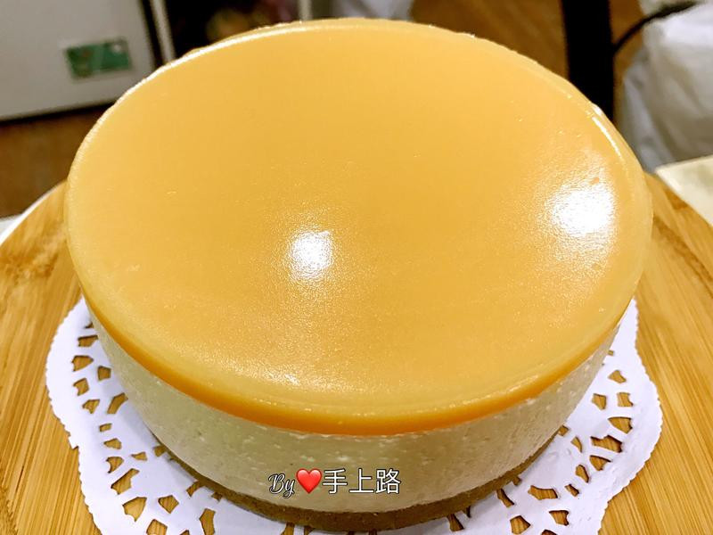

首頁 Home
熱門食譜 Hot
最新食譜 New
註冊 Sign
養樂多凍乳酪蛋糕

養樂多是一種活菌發酵乳，含有對人體腸道有益健康的乳酸菌，香港俗稱"益力多"，用養樂多來做起司蛋糕，讓甜點變得健康又美味^_^
食材
餅乾體
消化餅乾（麥維他）100g
無鹽奶油（融化）50g
養樂多起司
奶油乳酪 200g
細砂糖 40g
動物性鮮奶油 100g
養樂多 70g
吉利丁粉 5g
冷開水 15g
養樂多凍
吉利丁粉 20g
冷開水 60g
養樂多 140g
1
餅乾體～消化餅乾壓碎後（越碎越好，我用食物料理機打碎），加入融化的無鹽奶油攪拌均勻。
2
餅乾體～倒入直徑12.7cm(5吋）的活底蛋糕模裏確實壓平壓緊實，放在冰箱冷藏30分鐘。（我的5吋模高度有6cm)
3
吉利丁粉倒入冷開水中，泡5分鐘，等待吉利丁粉完全吸水澎漲，再用隔水加熱到成液體備用。
4
鍋內放奶油乳酪➕動物性鮮奶油➕細砂糖。
5
隔水加熱的方式攪拌均勻到滑順漂亮有光澤的質地，加入養樂多攪拌均勻，最後加入剛剛泡好的吉利丁液攪拌均勻。
6
過篩起司糊再倒入模具裏，左右搖晃讓起司糊平整，在桌面上震幾次震出小氣泡，放冰箱冷藏至少2個小時以上。
7
養樂多凍～（要等到起司糊已經冰2個小時了才可以做養樂多凍）吉利丁粉➕冷開水，泡5分鐘，再用隔水加熱融化成液體，直接倒入養樂多攪拌均勻。（這時會有很多泡沫，記得要過篩）
8
倒入模具到滿模即可，表面若還是有些許泡沫，可以用擦手紙輕輕放在表面吸收泡沫，再直接拉走擦手紙即可，蛋糕要放冰箱冷藏至少6個小時以上或冰到隔天。
9
脫模～用吹風機吹模具的周圍，每一個地方吹個20秒左右，模具底部放個沒有耳朵的杯子，將模具往下壓就可以脫模了。
10
完成!
 食材
食材